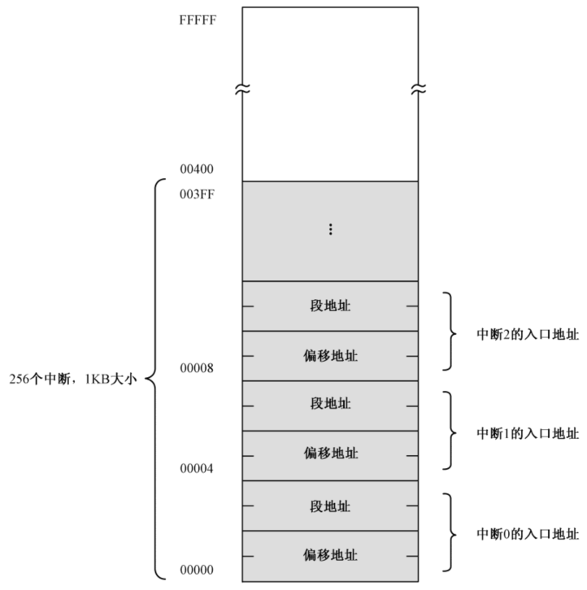
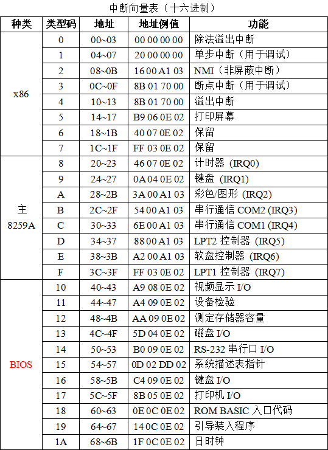

实验4：具有中断处理的内核
实验4：具有中断处理的内核
实验目的
1、PC系统的中断机制和原理 2、理解操作系统内核对异步事件的处理方法 3、掌握中断处理编程的方法 4、掌握内核中断处理代码组织的设计方法 5、了解查询式I/O控制方式的编程方法
实验要求
1、知道PC系统的中断硬件系统的原理 2、掌握x86汇编语言对时钟中断的响应处理编程方法 3、重写和扩展实验三的的内核程序，增加时钟中断的响应处理和键盘中断响应。 4、编写实验报告，描述实验工作的过程和必要的细节，如截屏或录屏，以证实实验工作的真实性
实验内容
(1)编写x86汇编语言对时钟中断的响应处理程序：设计一个汇编程序，在一段时间内系统时钟中断发生时，屏幕变化显示信息。在屏幕24行79列位置轮流显示’|’、'/'和’’(无敌风火轮)，适当控制显示速度，以方便观察效果，也可以屏幕上画框、反弹字符等，方便观察时钟中断多次发生。将程序生成COM格式程序，在DOS或虚拟环境运行。 (2)重写和扩展实验三的的内核程序，增加时钟中断的响应处理和键盘中断响应。在屏幕右下角显示一个转动的无敌风火轮，确保内核功能不比实验三的程序弱，展示原有功能或加强功能可以工作。 (4) 扩展实验三的的内核程序，但不修改原有的用户程序，实现在用户程序执行期间，若触碰键盘，屏幕某个位置会显示“OUCH!OUCH!”。 (5)编写实验报告，描述实验工作的过程和必要的细节，如截屏或录屏，以证实实验工作的真实性

实验环境
1.系统与虚拟机
- Windows 10 - x64 18363.1139
- VMware Workstation 16 Player：用于跑ubuntu虚拟机
- Ubuntu 20.04.2 LTS
- VirtualBox-6.1.18-142142-Win：用于运行.img文件
- DOSBox DOS Emulator 0,74,0,0：用于tcc和tasm编译，并且运行.com文件
2.windows上的相关软件、编译器等
- NASM version 2.10.07 compiled on Jan 2 2013
- TCC.EXE：用于16位C语言编程
- TLINK.EXE：用于C语言与汇编语言链接
- TASM.EXE：用于.asm文件的汇编
3.Ubuntu上的相关软件、编译器等
- NASM version 2.14.02
- makefile：GNU Make 4.2.1
实验前置知识
x86计算机在启动时会自动进入实模式状态，在内存的低位区（地址为0~1023[3FFH]，1KB）创建含256个中断向量的表IVT （每个向量[地址]占4个字节，格式为：16位段值:16位偏移值）。

下图是中断向量表，我们可以看到这次实验用到的中断向量主要包括8号中断向量（时钟中断）和9号中断向量（键盘中断）

实验过程
1.例程分析
该代码实现的是，在窗口坐标为（12，39）的位置，显示字符。从'!'开始，按照ASCII的顺序，依次显示之后的所有字符。每隔一段时间字符就会变化一次。
将Timer在代码中的偏移量设置为时钟中断向量（08h）的偏移地址（中断号为8，4*8 = 32，转换为16进制即20h）；再将该代码段的地址（CS）作为时钟中断向量的段地址。
程序在将初始字符'!'窗口中显示之后，就进入死循环。
而Timer中的代码会在很短的时间内进行调用：
设置一个延迟计数，每四次中断才进行一次字符的变化；
每次字符变化在相应的ASCII码基础上+1；
中断结束后，需要发送EOI（End of Interrupt）到ISR相应的位置，将其清零，并中断返回
1 | |
2.在右下角显示“无敌风火轮”
在老师的代码基础上进行修改。
我们只需要将风火轮的移动到右下角，并且将字符的变化修改为/|\-的依次变化即可（增加多一个横杠，会使风火轮更像是风火轮）。
主要修改的是Timer部分的代码。增加一个变量pos来对应字符的位置，每次中断发生，改变pos，即可。
1 | |
而在监控程序monitor.asm，也需要进行修改。在程序开始之前，需要将Timer设置到时钟中断的位置。注意！！！在这之后需要对寄存器重新设置初始值。
1 | |
3.先尝试使用键盘中断实现风火轮
我们先来尝试一下，把无敌风火轮改写为使用键盘来控制它转动与否。只需要改写一下9号中断向量的段地址和偏移地址，并添加下述代码到Timer这一段代码的最开头。
60h为CPU对应键盘的输入缓冲端口
in al,60h就从键盘缓冲中读取1个byte，到al中。只有这样，才能够判断是否需要发生键盘中断。
1 | |
很快我们就能实现一个由键盘输入控制的风火轮了。
4.OUCH!
首先，根据上述的方法，我们可以写出一个打印"OUCH! OUCH!"键盘中断程序。基本过程为：
1 | |
这里输出字符串，一开始使用的是BIOS中的10h中断，但是出现了一些bug，我改用了循环直接显示字符的方法，具体原因会在后文说明。
1 | |
那要如何实现在用户程序运行的过程中，能成功产生键盘中断，同时在用户程序结束后，还能够正常地通过键盘来进行输入与输出呢？
当运行用户程序时，要先把原有的中断向量口保存起来，然后将自己写的键盘中断Keyboard存放到9号中断位置。
1 | |
在用户程序返回内核之前，把原有键盘中断向量还原回去。
1 | |
5.将所有文件进行编译，并写入软盘
这一次，我将用户程序和开机程序都存放到了磁头号为1的地方，以给内核更大的空间。（扇区号0~17，当满18的时候，就要在磁头号+1；而makefile文件中的seek值只需要继续往下数就可以了）
1 | |
实验结果
通过观察，我们可以发现，无论是开机程序还是用户程序都可以成功显示"OUCH! OUCH!"，同时可以看到，无敌风火轮一直在右下角旋转。
问题与解决方式
延续之前实验出现的错误，当C程序写的过多的时候，字符串的输出就会出现各种莫名错误。解决方法就是，将没有必要的函数如
upper()、lower()等函数删除。restart.bin开机动画程序可以显示"OUCH! OUCH!"，但是用户程序无法显示。
问题原因不太清楚，很可能与BIOS的
int 10h调用有关。但是明明我已经将所有寄存器放入栈中。我将其修改为直接将字符循环一个个地在窗口中显示，最终用户程序和开机程序都可以成功显示"OUCH!"
1
2
3
4
5
6
7
8
9
10
11
12
13
14
15
16mov word ptr[index], 0
showagain:
mov bx,word ptr[index]
add bx,80*3+55
mov ax,2
mul bx
mov bp,ax
mov ax,0B800h
mov es,ax
mov ah,07h ; 0000：黑底、1111：亮白字（默认值为07h）
mov bx,word ptr[index]
mov al,byte ptr[ouch_str+bx] ; AL = 显示字符值（默认值为20h=空格符）
mov es:[bp],ax ; 显示字符的ASCII码值
inc word ptr[index]
cmp word ptr[index], 11
jnz showagain
创新性工作
- 在风火轮三种形态的基础上，再多添加一个横杠，使其更像是在转动
- 在"OUCH! OUCH!"出现之后，过一小段时间，会自动清空。给用户以警告——“不要再碰键盘啦！！！”。同时消失之后，不会影响用户程序的观看体验（捂脸，逃~）
实验总结
本次实验，是在上一个实验基础上完成的，仅仅加入了两个中断内容。本以为在上次搭好了基本框架后，这一次实验会相对轻松。但是。。。现实并不如我所愿。如果说之前搭的地基就歪了，接下来建造的楼只会越来越歪，最后甚至可能倒塌。
这次实验除了加入中断向量外，还需要对上次的实验进行完善，工作量并没有减少。首先是对所有的用户程序的扇区号进行后移，以提供给内核更大的空间，在这个过程中，对于磁盘的划分，磁头号扇区等有了更深的理解；其次是删除了C语言中冗余的函数；还有就是重写用户程序，曾经自以为是地使用“Esc”来返回用户程序，如今在用户程序运行的过程中，因为键盘中断被改写了，只好使用户程序在运行到某个特定地时刻，就自动返回监控程序。
本次实验重点学习了，中断向量表相关知识、用户程序执行过程中是如何发生中断的。在写中断程序相关的函数时，我特别地小心，在刚开始的时候就尽量将用到的所有寄存器都入栈，防止寄存器混乱出现莫名的错误。时间中断是相对容易实现的，只需要加入 入栈出栈的操作，并且在监控程序启动的时候就将该代码段存入中断向量表就可以了。但是键盘中断要复杂很多，涉及到用户程序启动时改变键盘中断，用户程序结束后恢复键盘中断的操作。而且很容易与现有的用户程序产生冲突，所以花的时间多很多。另外，我会尽可能地在一些完成一个小步骤或是小修改之后，就立刻进行编译debug，防止错误过多，到后期难以处理。
最后，希望接下来的操作系统实验能顺顺利利吧。